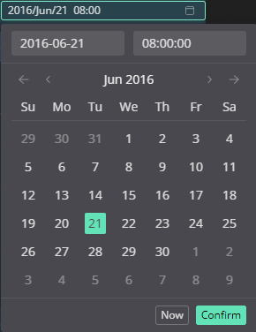

Map Options
Work in progress
Click on Map Options to expand it:

Briefing

As in the native editor, customize the briefing panel displayed at the beginning of a mission.
Briefing Template
Work in progress
Coalitions

As in the native editor, customize your coalitions. Select a nation from the list and use the top three-way switch to assign it to a category. You can also select a preset from the drop-down menu in the top-left.
Weather

As in the native editor, manipulate weather settings.
Date and Time

Choose your own date, or use the ‘Now’ button to choose your present time. Press ‘Confirm’ when you have made your selection.